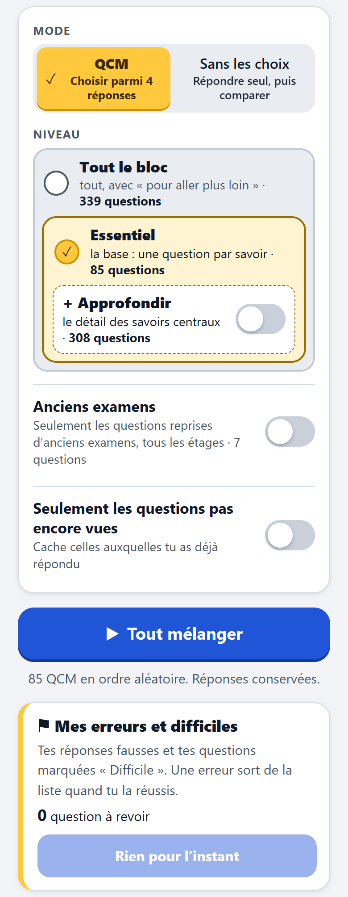
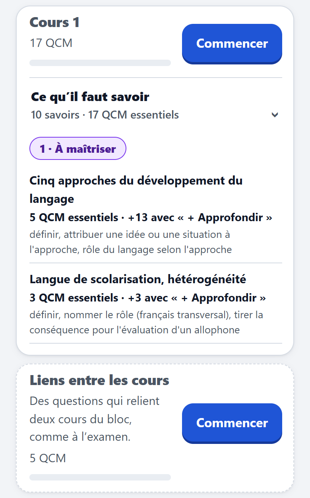
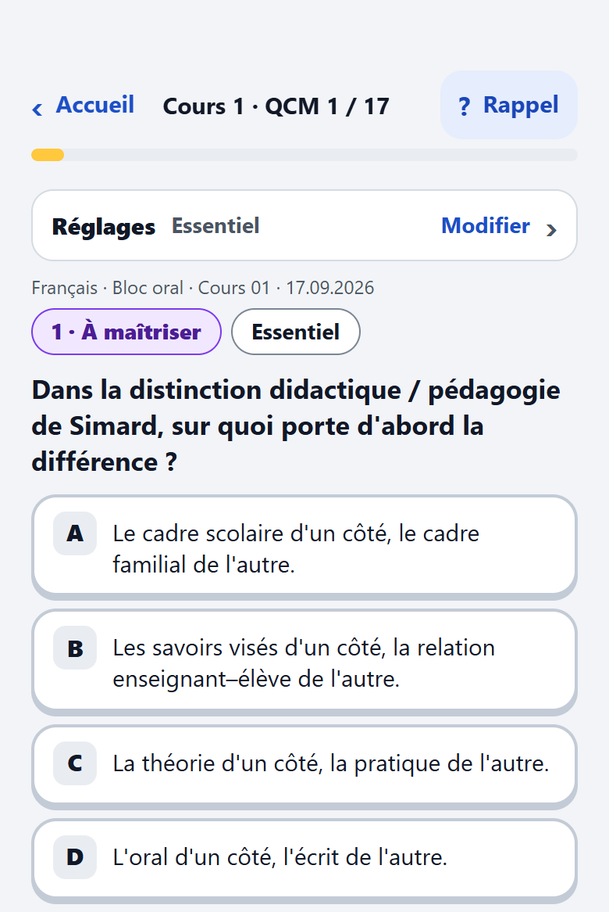
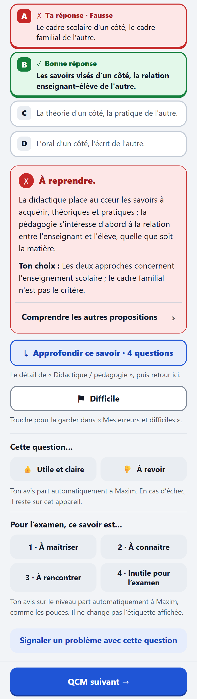
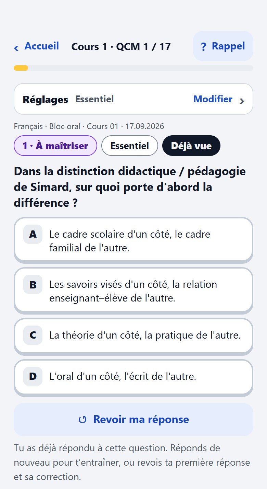
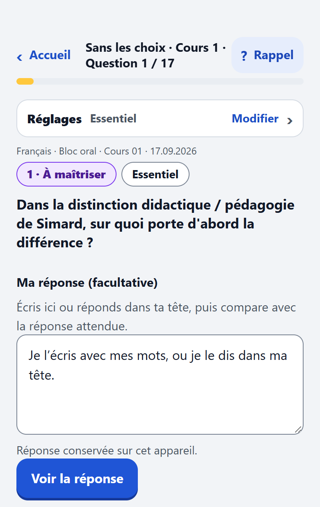
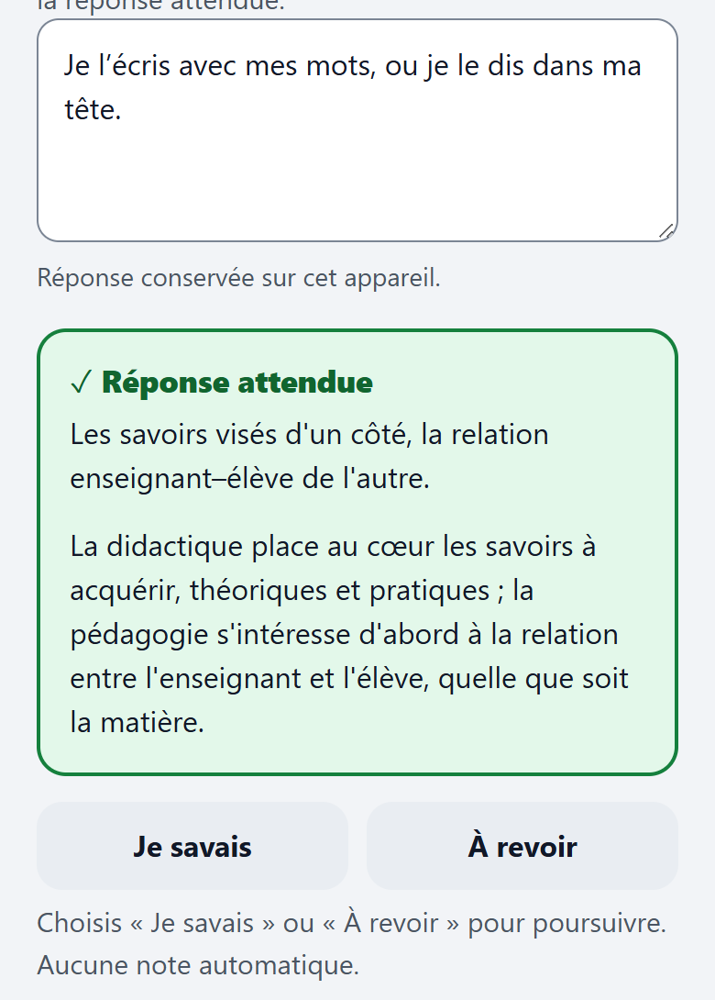

Guide en images
En 30 secondes
- QCM d’abord, en « Essentiel » : c’est déjà choisi pour toi.
- Puis « Sans les choix ». Mêmes questions, sans les propositions, comme à l’examen.
- Tes retours m’aident. Un pouce, une note de 1 à 4 ou un signalement : ça part tout seul.
A · L’accueil
Tu choisis comment réviser. Rien à régler : « QCM » et « Essentiel » sont déjà choisis.

- Deux modes. « QCM » : tu choisis parmi 4 réponses. « Sans les choix » : tu réponds seul, puis tu compares.
- Tout le bloc. Le grand cadre : toutes les questions, y compris celles « pour aller plus loin ». Le nombre de questions est écrit dans chaque cadre.
- Essentiel. La base : une question par savoir. C’est le choix de départ, commence ici.
- + Approfondir. Un interrupteur dans le cadre « Essentiel » : il ajoute le détail des savoirs centraux.
- Anciens examens. Garde seulement les questions reprises d’anciens examens, de tous les étages. Ce sont les plus proches de l’épreuve.
- Pas encore vues. Cache les questions auxquelles tu as déjà répondu.
- Tout mélanger. Toutes les questions de l’étage choisi, dans le désordre. Tu peux reprendre là où tu t’es arrêté.
- Mes erreurs et difficiles. Tes réponses fausses et les questions que tu as marquées « Difficile », au même endroit.
B · Les cours
Un cours = une séance. Plus bas sur l’accueil, chaque cours a sa carte.

- Le cours. Son nom, le nombre de QCM et ta progression (la barre).
- Commencer. Lance le parcours du cours, une question après l’autre.
- Ce qu’il faut savoir. Touche pour déplier la liste des savoirs du cours.
- Le poids. Chaque groupe de savoirs a un poids pour l’examen : 1 à maîtriser, 2 à connaître, 3 à rencontrer.
- Un savoir. Son nom, le nombre de QCM essentiels, et ce que « + Approfondir » ajoute.
- Liens entre les cours. Des questions qui relient plusieurs cours, comme à l’examen.
C · Une question
Une seule question à l’écran. Touche une proposition : la correction vient tout de suite.

- ‹ Accueil. Retour à l’accueil. Tes réponses déjà données restent sur ton téléphone.
- Où tu en es. Le numéro de la question dans le cours, et la barre qui se remplit.
- ? Rappel. Ouvre un rappel du cours avant que tu répondes.
- Réglages. Touche pour changer l’étage ou les filtres sans quitter la question.
- Le poids. L’importance du savoir pour l’examen : 1 à maîtriser, 2 à connaître, 3 à rencontrer.
- Le niveau. « Essentiel » ou « Approfondissement ».
- La question. Lis-la en entier, puis choisis.
- Les propositions A à D. Touche celle que tu penses juste. Pas de bouton « valider » : ton toucher répond.
D · Après ta réponse
Une fois corrigée, la question te propose plusieurs choses. Tu n’as pas besoin de tout toucher.

- Vert et rouge. La bonne réponse est en vert (✓). Si tu t’es trompé, ta réponse est en rouge (✗).
- Le verdict. Il dit si c’est juste ou à reprendre, et explique pourquoi.
- Comprendre les autres propositions. Déplie l’explication des choix que tu n’as pas pris.
- Approfondir ce savoir. Ouvre les questions de détail sur le même savoir. « Retour au parcours » te ramène ensuite à ta place.
- Difficile. Marque la question pour la retrouver dans « Mes erreurs et difficiles ». Touche encore pour retirer la marque.
- Les pouces. 👍 utile et claire, 👎 à revoir. Ton avis part tout seul à Maxim.
- Les notes 1 à 4. Ce savoir est-il bien classé ? 1 à maîtriser, 2 à connaître, 3 à rencontrer, 4 inutile pour l’examen. Ça ne change pas l’étiquette.
- Signaler un problème. Une erreur, une question pas claire : écris un mot, puis « Envoyer à Maxim ».
- QCM suivant. Passe à la question suivante. Rien n’avance tout seul.
E · Une question déjà vue
Quand tu reviens sur une question, la réponse est cachée, pour que tu puisses t’entraîner.

- Déjà vue. Tu as déjà répondu à cette question. La correction est cachée.
- Réponds de nouveau. Les propositions sont libres : essaie encore. Seule ta première réponse compte dans tes résultats.
- Revoir ma réponse. Montre ta première réponse et sa correction.
F · Sans les choix
Les mêmes questions, sans les propositions. Plus proche de l’examen, et sans note automatique.


- La question. Sans propositions : cherche la réponse toi-même.
- Ma réponse. Écris-la, ou dis-la dans ta tête. Écrire est facultatif.
- Voir la réponse. Affiche la réponse attendue.
- La réponse attendue. Compare-la à la tienne.
- Je savais / À revoir. Évalue-toi toi-même. Il faut choisir l’un des deux pour passer à la question suivante. Tes « À revoir » vont dans « Mes erreurs et difficiles ».
Questions fréquentes
Mes réponses sont-elles envoyées ?
Non, pas en bloc. Tes réponses, tes résultats et tes marques « Difficile » restent sur ton téléphone (et dans ton Drive seulement si tu le connectes). Seuls partent : tes pouces et tes notes 1 à 4, tout seuls ; et un signalement, seulement quand tu touches « Envoyer à Maxim ». Chaque envoi emporte la question, ce que tu avais choisi ou écrit à ce moment-là, et ton prénom si tu l’as indiqué.
Ça marche hors ligne ?
Oui, une fois que tu as ouvert le quiz une première fois avec du réseau. Les avis en attente repartent quand tu retrouves du réseau.
Comment retrouver mes erreurs ?
Sur l’accueil, ouvre « Mes erreurs et difficiles ». Une erreur en sort quand tu réussis la question de nouveau. Une question « Difficile » y reste tant que tu n’enlèves pas la marque.
À quoi servent les pouces ?
À me dire quelles questions sont claires et lesquelles sont à corriger. Un mauvais pouce ? Touche l’autre : il remplace le premier.